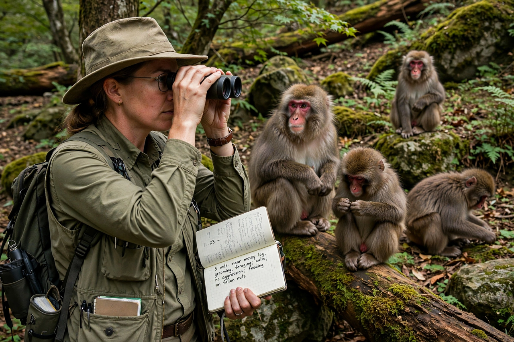

From Wikipedia, the free encyclopedia
Primatology is the scientific study of primates. It is a diverse discipline at the boundary of mammalogy and anthropology, and researchers can be found in academic departments of anatomy, anthropology, biology, medicine, psychology, veterinary sciences and zoology, as well as in zoos, sanctuaries and other non-governmental organisations.

Primatology arose distinct from other scientific fields for various reasons — primates have especially long lifespans, complex social groupings, and strong similarity to humans. Modern field primatology began in the mid-20th century with long-term studies of wild populations by figures such as Kinji Imanishi in Japan, and by Jane Goodall, Dian Fossey, and Biruté Galdikas — the "Trimates" sponsored by Louis S.B. Leakey.
Approaches include laboratory studies of cognition and anatomy, and field observation of behaviour, ecology and social structure in the wild. Western primatology has traditionally emphasised social behaviour and evolution, whereas the Japanese tradition pioneered methods such as prolonged individual identification and provisioning of troops.
Many primate species are threatened by habitat loss and hunting; primatology research underpins conservation strategies and highlights the ethical issues of keeping primates in captivity and using them in research.
See also: Primate, Physical anthropology.